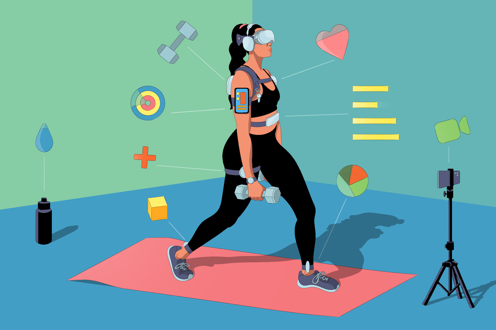

A healthy diet includes a balanced intake of macronutrients (carbohydrates, proteins, and healthy fats) and micronutrients (vitamins and minerals) to support overall well-being. It emphasizes whole foods like fruits, vegetables, whole grains, lean proteins (chicken, fish, legumes), and healthy fats (avocados, nuts, olive oil) while limiting processed foods, sugary drinks, trans fats, and excess salt. Staying hydrated, eating in moderation, and practicing mindful eating are essential for maintaining a healthy lifestyle. Popular dietary patterns include the Mediterranean diet (rich in healthy fats and whole foods), the keto diet (low-carb, high-fat), and vegetarian or vegan diets. Cooking at home and incorporating fiber-rich foods can further enhance digestion and long-term health. Avoid processed foods and excess sugar.
Consistency is the key!Staying fit requires a well-balanced fitness routine that includes a mix of cardio, strength training, flexibility exercises, and proper recovery. Aim for at least 150 minutes of moderate cardio (like brisk walking or cycling) or 75 minutes of intense cardio (like running or HIIT) weekly, combined with strength training (bodyweight exercises, resistance bands, or weights) at least 2-3 times a week to build muscle and boost metabolism. Incorporating flexibility exercises like stretching or yoga improves mobility and reduces the risk of injury. Stay consistent, listen to your body, and prioritize rest days for muscle recovery. Pair your routine with a balanced diet and proper hydration to maximize results and maintain long-term fitness.

Cardio exercise, or aerobic exercise, involves activities that increase your heart rate and improve cardiovascular endurance. It includes exercises like running, cycling, swimming, brisk walking, and jumping rope, which help strengthen the heart, lungs, and circulatory system. Regular cardio workouts boost stamina, burn calories, aid in weight management, and reduce the risk of heart disease, high blood pressure, and diabetes. It also enhances mood, reduces stress, and improves overall mental well-being by releasing endorphins. For optimal health, aim for at least 150 minutes of moderate-intensity or 75 minutes of high-intensity cardio per week. Mixing different forms of cardio can prevent boredom and target different muscle groups effectively.
Weight lifting is a crucial form of exercise that strengthens muscles, improves metabolism, and enhances overall physical health. It helps build lean muscle mass, which boosts calorie burn even at rest, making it effective for weight management. Regular strength training increases bone density, reducing the risk of osteoporosis, and improves joint stability, lowering the chances of injuries. It also enhances posture, balance, and overall functional strength for daily activities. Beyond physical benefits, weight lifting supports mental well-being by reducing stress and improving confidence. Incorporating at least 2-3 sessions per week into a fitness routine can lead to long-term health benefits and a stronger, more resilient body.
Yoga is a powerful practice that enhances physical, mental, and emotional well-being by combining movement, breath control, and mindfulness. It improves flexibility, strength, and posture while reducing stress, anxiety, and promoting relaxation through deep breathing and meditation. Regular yoga practice supports better circulation, digestion, and immune function, while also reducing the risk of chronic conditions like heart disease and high blood pressure. It enhances mental clarity, focus, and emotional balance, making it an effective tool for overall wellness. Whether for relaxation, strength-building, or improving flexibility, incorporating yoga into your routine can lead to a healthier, more balanced lifestyle.
Rest is essential for overall health, allowing the body and mind to recover, repair, and function optimally. Quality sleep and adequate rest help muscle recovery, boost immunity, and regulate hormones, which are crucial for physical and mental well-being. Lack of rest can lead to fatigue, decreased focus, weakened immunity, and a higher risk of stress-related illnesses. In fitness, rest days prevent injuries, reduce muscle soreness, and improve performance by allowing the body to rebuild stronger. Mentally, rest enhances mood, reduces stress, and improves cognitive function. Prioritizing proper sleep, relaxation, and recovery time is key to maintaining long-term health, productivity, and overall balance.
Follow this simple plan to stay fit and healthy: